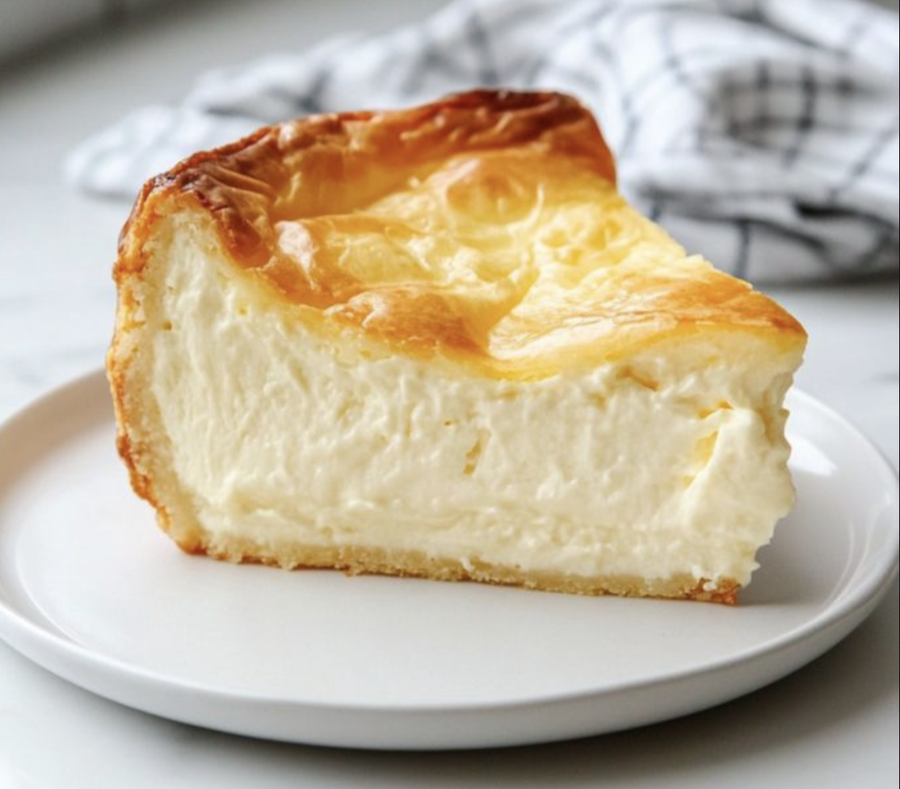

German Cheesecake
Käsekuchen
Light and creamy quark cheesecake with a tender crust—the authentic German classic.
Authentic German Baking in Asheville
Born in Cologne, Germany, I grew up surrounded by the rich traditions of German baking—afternoon coffee and cake, seasonal treats, and recipes passed down through generations. Now in Asheville, I'm bringing these authentic flavors to the mountains.
As someone who is gluten-free, I understand the joy of finding delicious treats that fit your dietary needs. That's why I offer gluten-free and dairy-free options for many of our German classics—without compromising on taste or tradition. Every cake is made with care, using traditional techniques and locally-sourced ingredients whenever possible.
Käsekuchen
Light and creamy quark cheesecake with a tender crust—the authentic German classic.
Russischer Zupfkuchen
Rich chocolate base topped with creamy cheesecake and signature chocolate crumbles.
Gewürzkuchen
Warmly spiced traditional cake with hints of cinnamon, cardamom, and cloves.
Saisonale Kuchen
Fresh creations featuring local Asheville fruits and seasonal flavors.
Spinat-Törtchen
Savory mini tarts with creamy spinach filling in a golden, flaky crust.
Bring the authentic taste of Germany to your café, restaurant, or market. We partner with local businesses to provide fresh, traditional German baked goods made with the same care and quality you'd find in our kitchen.
Interested in partnering with us? We'd love to hear from you.